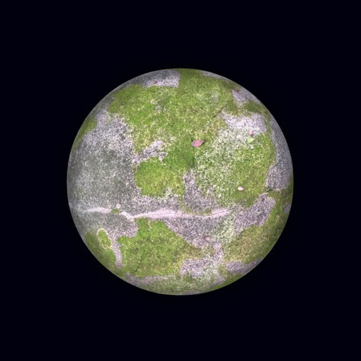
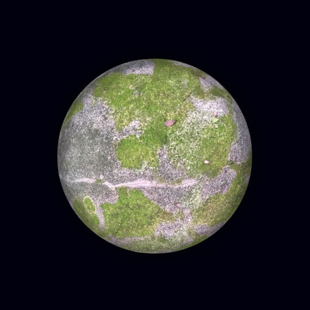

Algal Worlds
Photographic art-research

Algal Worlds are a series of newly discovered planets, found growing on an old church in central London. Green algae is often washed off buildings before it can fully bloom. But science and design projects have demonstrated how algae could be used to bioremediate urban environments by absorbing industrial pollution. Algal Worlds invites you to look more closely at worlds within worlds. Worlds that are continuously and richly experienced by non-human species. Exhibited at RADICAL LANDSCAPES exhibition, The Plough Arts Centre in 2019.
 
